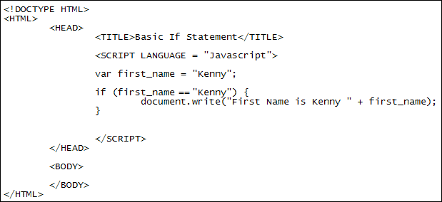

Javascript and IF Statements
Javascript is what's known as a sequential programming language. This means that each and every line of code is executed from top to bottom. Quite often, however, you don't want every line to execute - you'll want more control over the way your programmes work.
One way to control the flow of your code is with conditional logic. Conditional
logic is all about what happens IF a condition is met or not met. For example,
you may have an email text box on a form that you want your users to fill in.
You don't want this text box to be empty when the user click the SUBMIT button.
So you need a way to say "IF the email address is missing THEN don't send
the form". You do this with IF Statement.
IF Statements
You can use an IF Statement to control the flow of your Javascript code. An IF Statement will evaluate to either true or false. They look like this:
if ( condition_to_test) {
}
So it's just the word "if" in lowercase. Next comes a pair of round brackets. In between the round brackets you need a condition to test. The condition will be evaluated and checked if it's true. If your condition is true then whatever code you have between a pair of curly brackets will get executed. IF your condition is false then the code between the curly brackets will be ignored. Take the following code as an example:
var first_name = "Kenny";
if ( first_name == "Kenny" ) {
document.write( "First Name is Kenny " + first_name );
}
The first line of the code stores the text "Kenny" into a variable called first_name. Next we have our IF Statement. The condition we're testing is between the round brackets:
first_name == "Kenny"
So we're checking to see whether or not the variable called first_name contains the word "Kenny". Notice that we now have two equal symbols (==) between the variable we want to check and the text we are checking for. The double equal symbols mean "has a value of". It's not assigning a value "Kenny" to the variable, like it would if there were only one equal symbol. The whole line, then, reads like this: "IF the variable called first_name has a value of Kenny". Javascript will test the truth of that statement. IS it true, or is it false? It is indeed true. In which case Javascript can go ahead and execute the code between the curly brackets.
In fact try that code out. Create a new web page from your template. Type the code above between your two Javascript tags. Your code should then look like this:

Make sure you have the correct format for the new if statements (the correct syntax, as it's called). The first line, the one that starts with var, needs a single equal sign ( = ). This is because we're assigning a value of "Kenny" to the variable. In between the two round brackets of the IF statement, however, you need two equal signs (==). They mean "has a value of". You also need two curly brackets for IF statements. In between the curly bracket is where your code goes.
Save your work and test the results in a browser. You should see the following printed to your page:
First Name is Kenny Kenny
So we have Kenny written twice. The first time is because we typed "Kenny" between a pair of double quotes. The second time is because Javascript writes whatever is in the variable first_name. To see why you need two double equal symbols, delete one of them from between the round brackets of the IF statements. Now change "Kenny" to "Lenny":
if ( first_name = "Lenny" ) {
Save your changes and run the code again. This time, you'll see the following:
First Name is Kenny Lenny
Even though we assigned a value of "Kenny" to the variable in the first line (var first_name = "Kenny") Javascript has changed it to "Lenny". This is because we changed the double equal signs to a single equal sign in the IF statement. This assigns a new value to the variable.
So be careful when typing out your conditions between the round brackets of
an IF statement: two equals signs checks a value, just one assigns a value.
In the next part, we'll look at IF ... ELSE Statements.